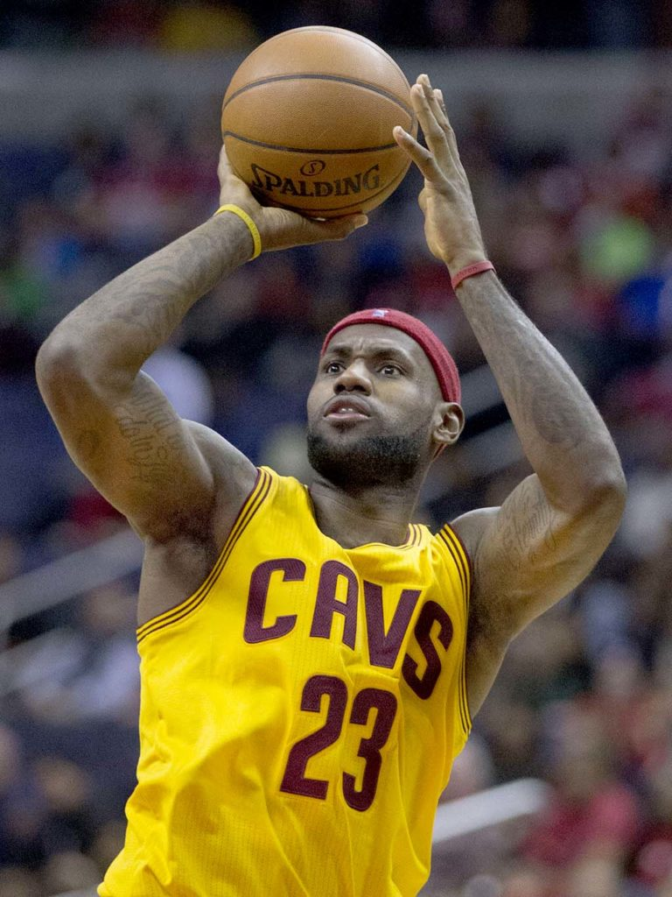
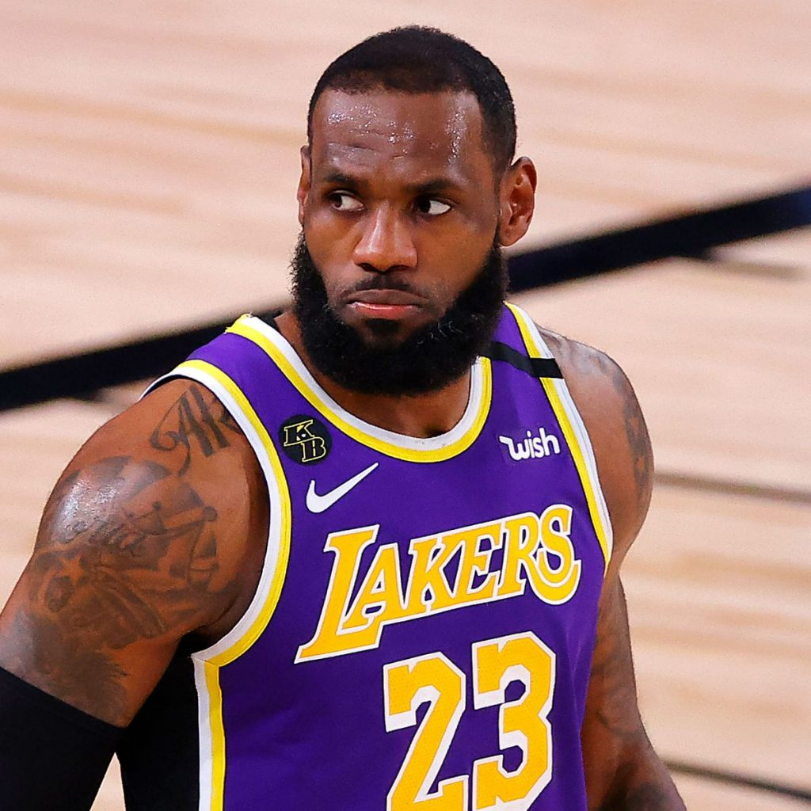
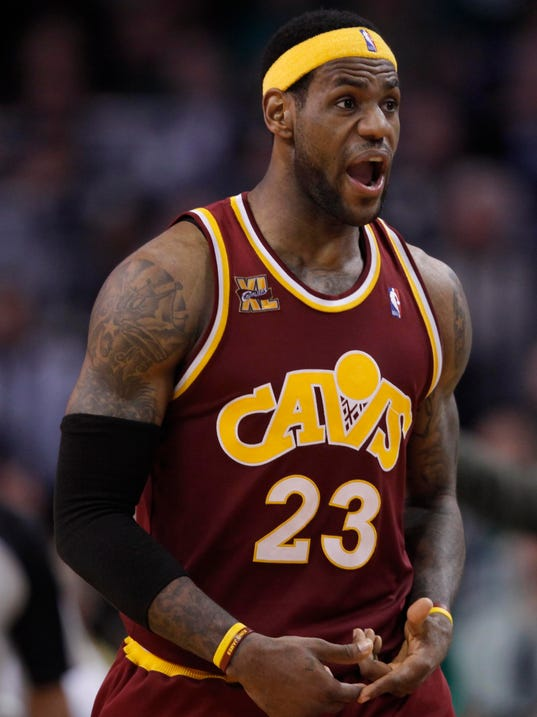

Biografia
LeBron Raymone James Sr. (Akron, Ohio; 30 de diciembre de 1984) es un jugador de baloncesto
estadounidense que pertenece a la plantilla de Los Angeles Lakers de la NBA. Con 2,06 metros de
estatura, su posición es la de alero, pero su talento, versatilidad y poderío físico le permiten jugar
tanto de base como de ala-pívot. James es el máximo anotador de la historia de la NBA y es
considerado como uno de los mejores jugadores de baloncesto del mundo y de la historia.
James se proclamó tres veces Mr. Basketball en Ohio durante el instituto, y apenas cursaba su temporada
sophomore en St. Vincent-St. Mary High School, ya era considerado por los medios de comunicación como la
futura gran estrella de la NBA. Firmó un contrato de 90 millones de dólares con Nike antes de debutar en
la NBA. Con 18 años, James fue elegido en la primera posición del Draft de la NBA de 2003 por Cleveland
Cavaliers. Con los Cavs ratificó el prometedor futuro que se labró durante su estancia en el instituto,
y en su primera temporada se llevó el premio al Rookie del Año de la NBA. Desde que llegó a la liga,
LeBron ha registrado muchos récords de precocidad, entre ellos, el del jugador más joven en haber
llegado primero a cada millar (de 1000 a 38 000) de puntos.
Desde 2005 ha sido All-Star (del que resultó tres veces MVP) y ha formado parte de los Mejores Quintetos
de la NBA, siendo elegido en trece ocasiones en el Primer Quinteto. En la 2006, James terminó segundo en
la votación del MVP de la NBA 2005-06. Su premio individual más importante llegó el 4 de mayo de 2009,
al ser nombrado MVP de la temporada 2008-09, galardón que ganaría también en las temporadas 2009-10,
2011-12 y 2012-13. En 2012, 2013, 2016 y 2020 fue campeón de la NBA y MVP de las Finales.
El 7 de febrero de 2023, se colocó como máximo anotador de la historia de la liga al superar los 38 387
puntos de Kareem Abdul-Jabbar.

Inicios
Cuando LeBron nació, su madre, Gloria James, tan solo tenía 16 años y su padre biológico,
Anthony McClelland, exconvicto, se desentendió de su hijo desde su nacimiento. Gloria lo sacó
adelante sola y sin ayuda, situación agravada por la muerte de la madre de ella cuando LeBron
apenas era un bebé. Esta circunstancia acentuó las dificultades de una familia que vivió en una
constante lucha por mantenerse. Gloria no encontraba trabajo fijo y ambos pasaban de piso en
piso continuamente, y se conocieron todos los barrios marginales de Akron, una ciudad de más de
200.000 habitantes, situada a menos de una hora al sur de Cleveland.

NBA
James fue seleccionado por Cleveland Cavaliers en primera posición del Draft de la NBA de 2003.
Antes de llegar a la NBA, LeBron firmó un contrato de 90 millones de dólares con Nike y otro con
Upper Deck. Eligió el dorsal 23, el mismo que llevaba Michael Jordan, al que considera su ídolo
y un modelo a seguir.

Debut
Debutó ante Sacramento Kings, con 25 puntos, 6 rebotes, 9 asistencias y 4 robos. Después del
partido, en rueda de prensa, le preguntaron como quien le gustaría llegar a ser, y respondió
Jason Kidd. James admiraba a Kidd desde que llegó a la liga y le dedicó su primer triple-doble a
él. En aquella temporada, James rompió récords de precocidad como el jugador más joven en anotar
30 y 40 puntos en un partido. El 27 de marzo de 2004, anotó 41 puntos a New Jersey Nets.
Informacion Debut